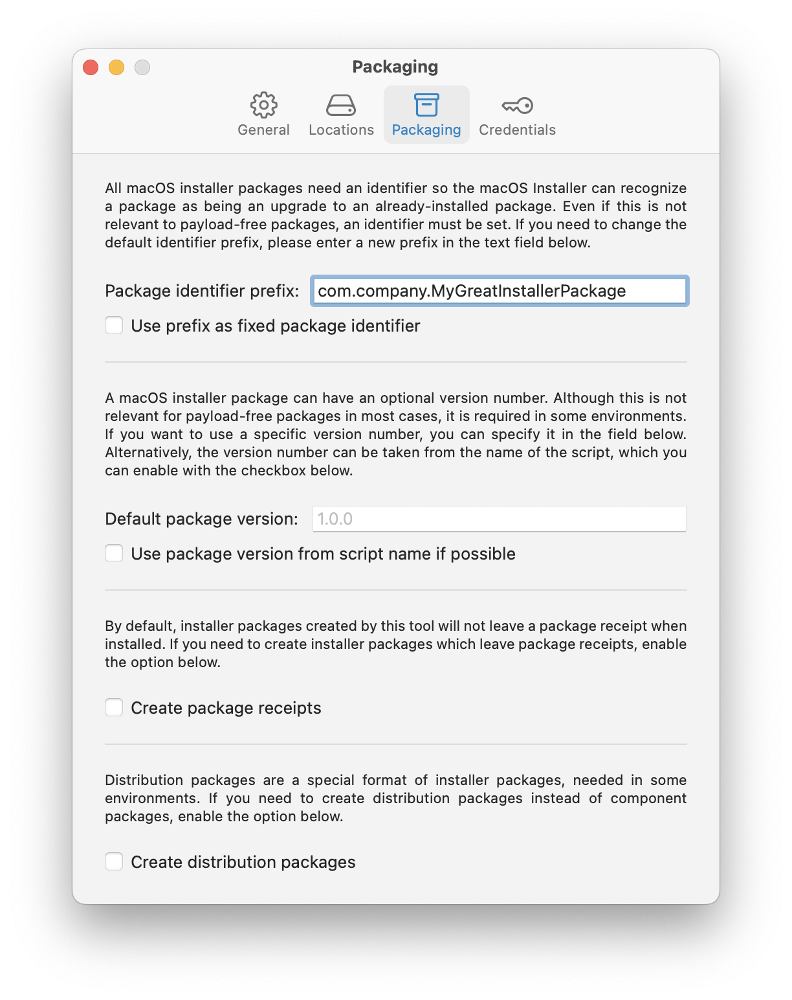
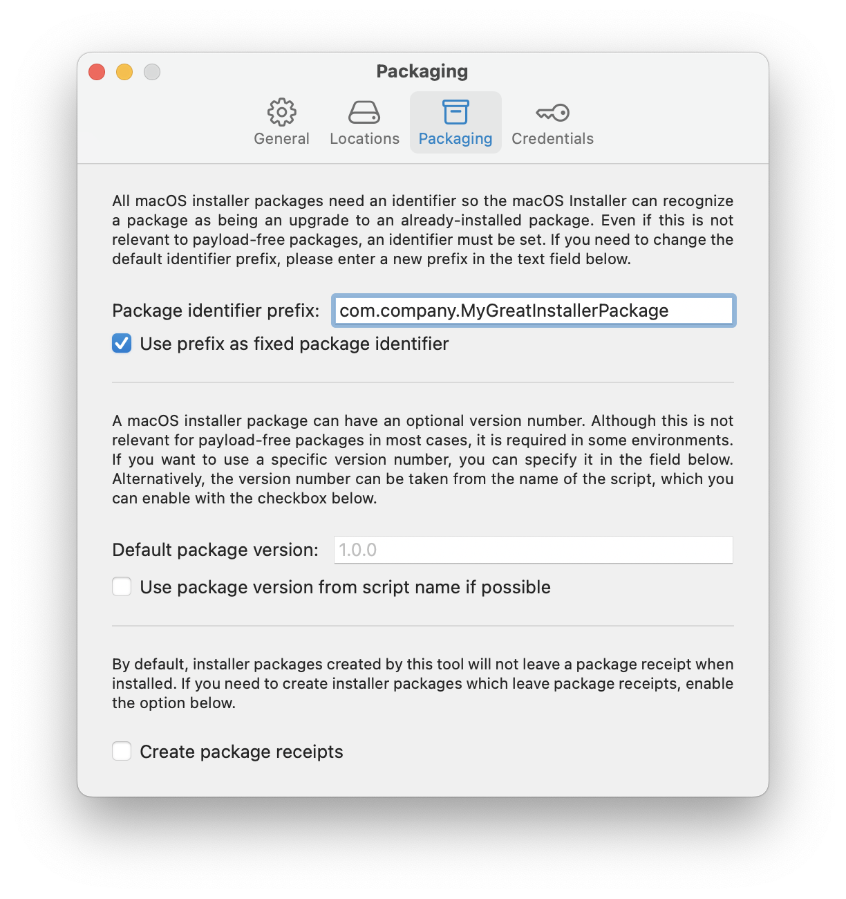

Script2Pkg
Script2Pkg
Script2Pkg
Setting package identifier
All macOS installer packages need an identifier so that macOS can recognize if a package is a new installation or an upgrade from a previously-installed installer package.
By default, the package identifier used by the app will begin with the following: corp.sap.Script2Pkg
This is referred to in the context of the app as the identifier prefix . The remainder of the identifier will be a UUID. For example, using the default settings will may result in a package with the following package identifier: corp.sap.Script2Pkg.5BA0E8CB-99B2-4FC2-85AE-0C1CC85ACC05
If you want to choose an alternate identifier prefix, use the following procedure:
1. Go to the Script2Pkg menu and select Settings…

2. Select the Packaging option.

3. Click in the Package identifier prefix: entry blank and enter whatever you want as the new identifier prefix. Packages created by the app will now use this identifier prefix, followed by a UUID, as the package identifier.

If you want to have whatever you entered into the Package identifier prefix: entry blank to be the complete package identifier, enable the Use prefix as fixed package identifier option.
Packages created by the app will now use the identifier prefix as the package identifier. No UUID information will be added to the package identifier.

Reverting to Default Settings
To reset back to the default settings, remove the current entry in the Package identifier prefix: entry blank. If applicable, also uncheck Use prefix as fixed package identifier option.